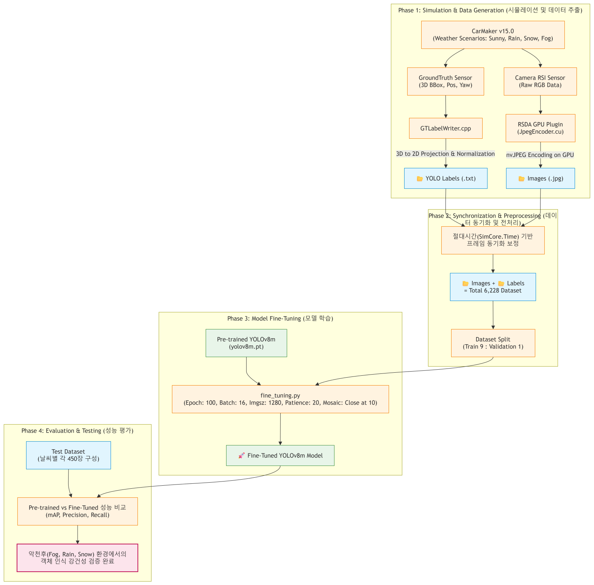
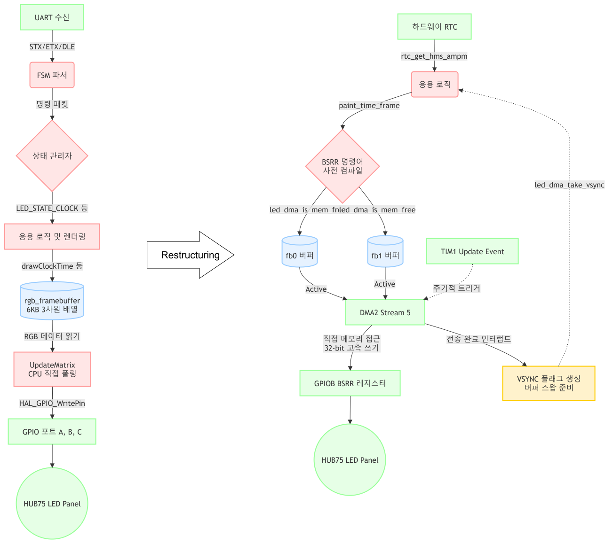

Passionate about low-level optimization and system performance. I build reliable, high-speed, and maintainable systems for embedded platforms.
I focus on high-level system architecture while paying attention to granular efficiency. I dig deep into complex problems with relentless curiosity and drive system perfection through active collaboration.
Application team for HIL/ADAS (Researcher)
Undergraduate Student Researcher
Embedded Systems Engineering Course Graduate
B.S. in Electrical and Electronics Engineering (Graduated)
Automated synthetic dataset collection and YOLOv8m robustness evaluation under adverse weather conditions using CarMaker RSDA API and CUDA nvJPEG acceleration.
2026.01 - 2026.02
Real-time Alert System for Blind Spots: Implemented immediate warning signal control logic using the STM32 board to prevent accidents on narrow blind-spot roads.
2025.06 - 2025.08 (Lead Embedded Developer / STM32 Nucleo-F401RE Control & Signal Processing)
Multi-threaded server-client architecture for remote hardware control using Raspberry Pi 4, POSIX threads, daemon processes, and dynamic shared libraries (.so).
2025.05.21 - 2025.05.23 (Lead Embedded Developer)I am open to opportunities in Embedded Systems, Real-Time Control, and Firmware Engineering. Feel free to reach out to me!